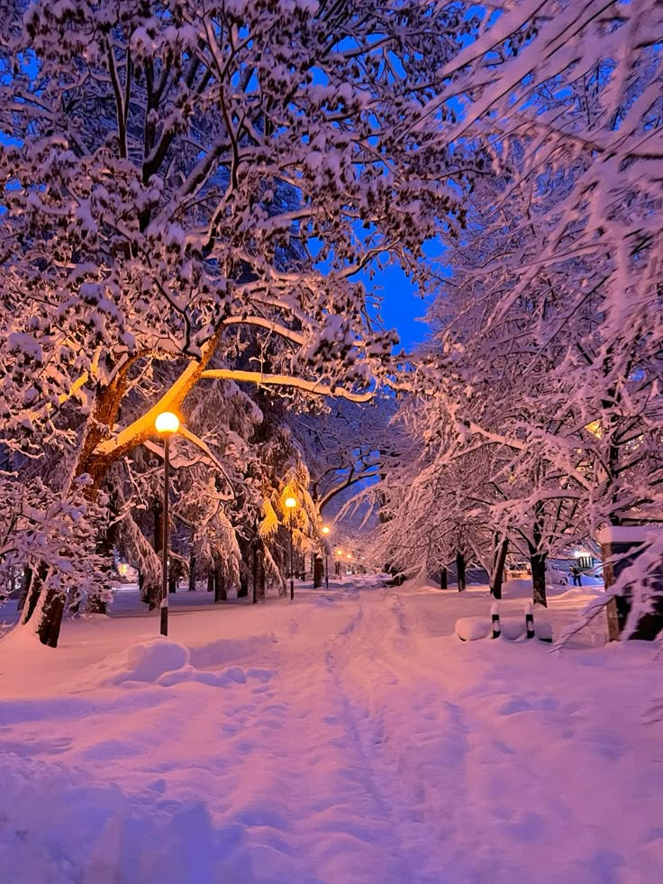

Учебный сайт студентов группы ИС-2К-25

Зима — прекрасное время года
Зима — одно из самых красивых времён года. В это время природа словно погружается в сказку. Земля покрывается белым пушистым снегом, деревья надевают серебристые наряды, а на окнах появляются красивые узоры изо льда.
Зимой можно весело проводить время на улице: кататься на санках, играть в снежки, лепить снеговиков и кататься на коньках. Особенно приятно возвращаться домой после прогулки, пить горячий чай и согреваться в уютной комнате.
Зимой отмечают самый волшебный праздник —Новый год. Люди украшают ёлки, дарят подарки и загадывают желания.
Я люблю зиму за её красоту, волшебную атмосферу и весёлые зимние развлечения.